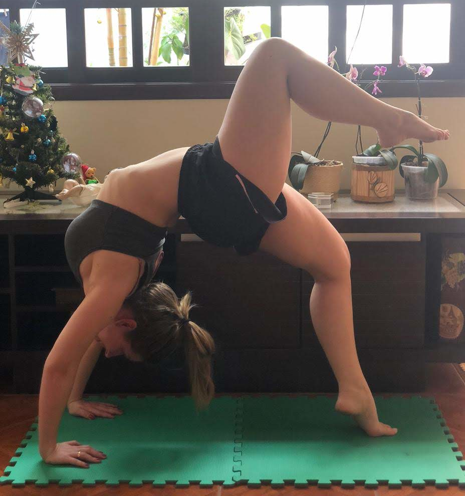
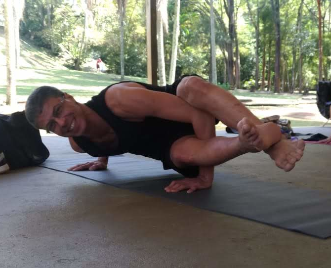
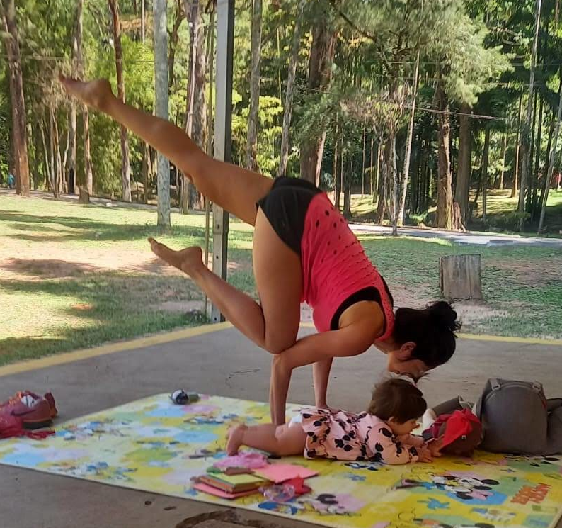
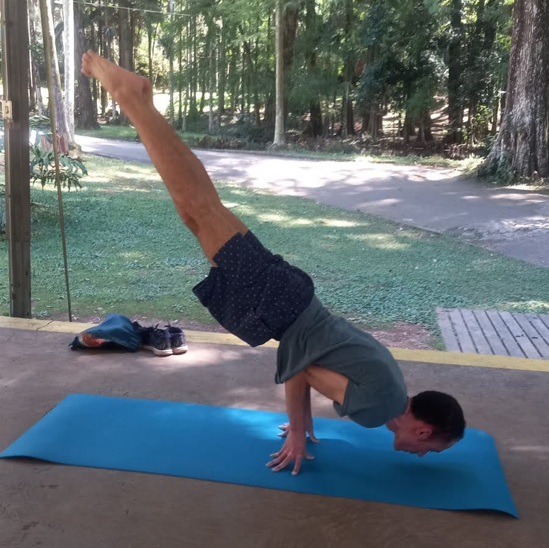
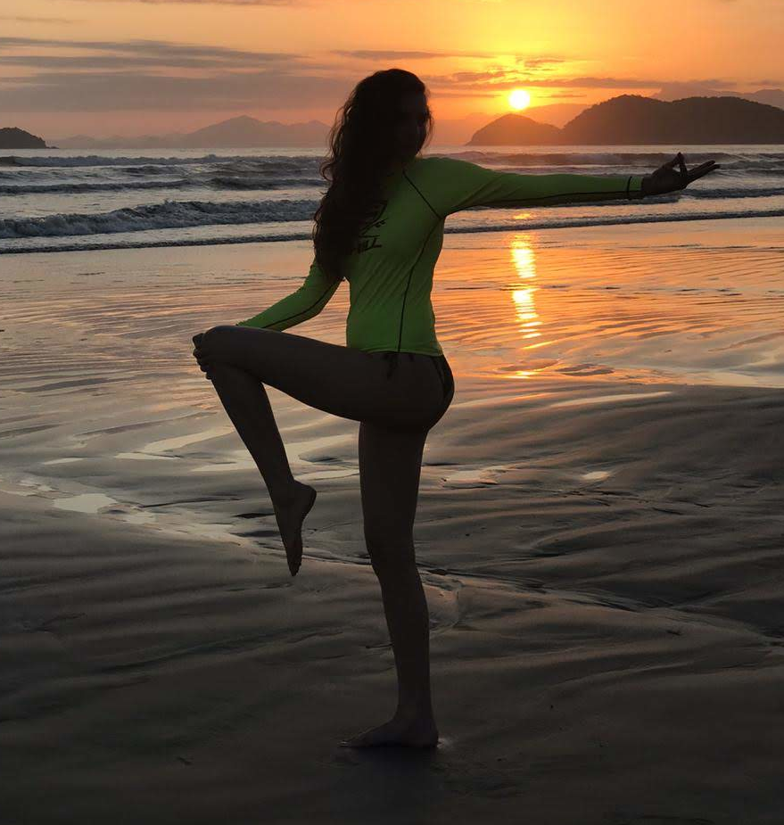

Depoimentos

As aulas da Sandra transformaram minha rotina. Me sinto mais leve e centrada.
Ana P.

Encontrei nas práticas um momento só meu, com muito acolhimento e presença.
Marcos R.

A Sandra tem uma energia única. Cada aula é um respiro para o corpo e a mente.
Letícia M.

O jeito como ela conduz a prática é tranquilo e inspirador. Recomendo demais!
Diego F.

Comecei buscando alívio para dores posturais e acabei ganhando muito mais: equilíbrio e clareza.